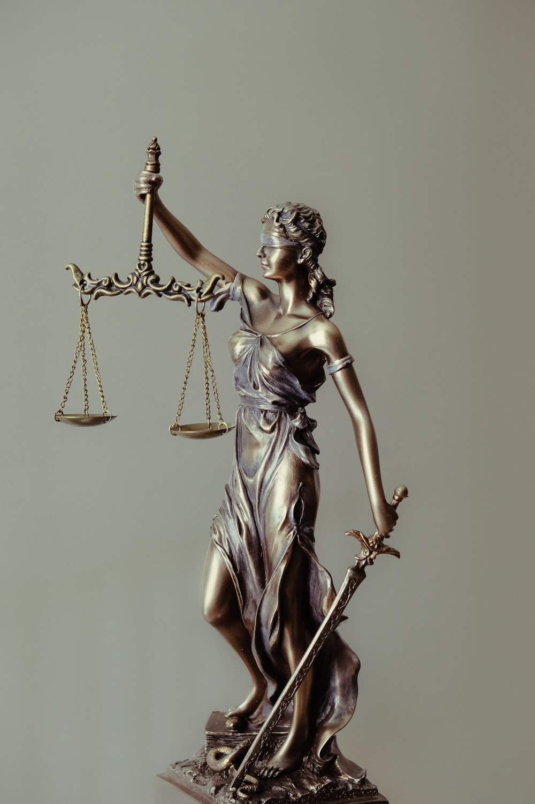

The Federal Supreme Court of Ethiopia is the highest court in Ethiopia. It was established by the Federal Democratic Republic of Ethiopia constitution in 1994 and is currently located in Addis Ababa.Article 78 of the Constitution establishes the judiciary and at the top is the FSC.By the Constitution, the Federal Supreme Court has "the power of cassation over any final court decision containing a basic error of law".In 2018, Prime Minister Abiy Ahmed appointed Meaza Ashenafi to be the first female president of the Federal Supreme Court.Solomon Areda Waktolla was appointed as Vice President of the Federal Supreme Court.
After the People's Democratic Republic of Ethiopia (PDRE) was toppled, the Ethiopian Peoples' Revolutionary Democratic Front (EPRDF) that was dommainted by the Tigray People's Liberation Front (TPLF), formed the federal system that exists today.Within the three year transition from the PDRE, the 1995 constitution was drafted and developed.It was officially adopted in 1994 which created the federal and state governments in Ethiopia.The constitution was able to establish judicial, executive, and legislative powers for the federal and state governments.However, the framers of the constitution (who did not trust the judiciary under the PDRE) entrusted the House of Federation (HoF) instead of the courts for solving the issues that may develop between the governmental powers. The Federal Supreme Court of Ethiopia was created by the 1995 constitution.The constitution was able to successfully establish a dual court system.In the constitution, the Federal Supreme Court was given "supreme federal judicial authority".Over federal issues and matters, the Federal Supreme Court is given the final word.With the mandate, the regional states in Ethiopia were able to develop and create their own supreme, high, and first-instance courts.The Federal Supreme Court resolves the disputes over jurisdiction that may be among those federal and municipal courts in Dire Dawa along with Addis Ababa. The ability to interpret the constitution and decide on cases that entertain these constitutional issues is given to the House of Federation instead of the courts.The Council of Constitutional Inquiry ("CCI") was created in addition to the House of Federation in order to help the HoF in interpretation and investigation of constitutional issues. The CCI has eleven members.Six of the members are legal scholars and three are from the HOF.The President of the Supreme Court acts as the chairperson of the CCI.The Vice President of the Supreme Court is on the CCI as well and acts as the deputy chair person.The role that the CCI has on constitutional review is advisory.If the courts believe there is a case needing constitutional interpretation, they submit those cases to the HOF and CCI.